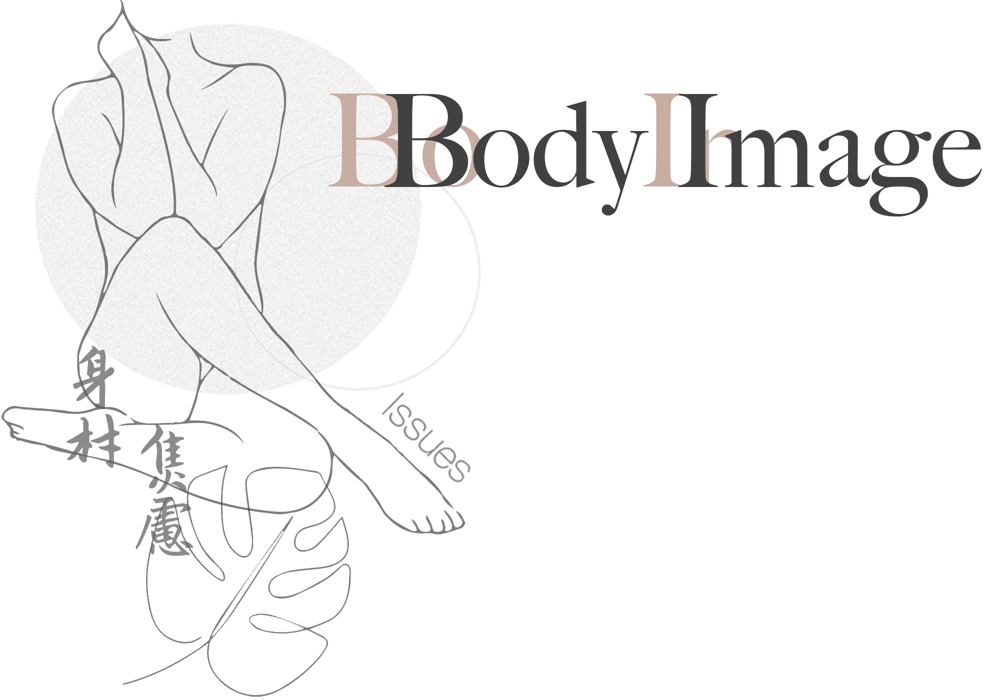
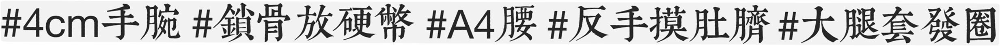
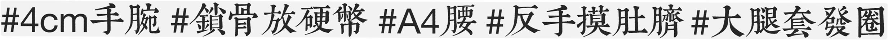

身體形象自我認知問題，是过度崇拜不健康的瘦削体态的现代社會中的常見問題。因为习惯性地使用不切實際的「完美」標准来对照自身，許多人在追求完美体态的过程中可能會感到沮喪、焦慮、自我厭倦，甚至触发进食障碍等精神疾病。如媒體中減肥相關的热点话题，總是會无形中给对自己身材现状不满者制造压力。
Body image issues are a common problem in a society that promotes unrealistic and homogeneous body idevals, it is challenging to not get caught up in comparing oneself to these unrealistic standards. As a result, many people may experience depression, anxiety, self-loathing and even develop Eating Disorders after failing to lose weight. Topics in Social Media, for instance, relevant to losing weight, can always intensify the stress.


 
